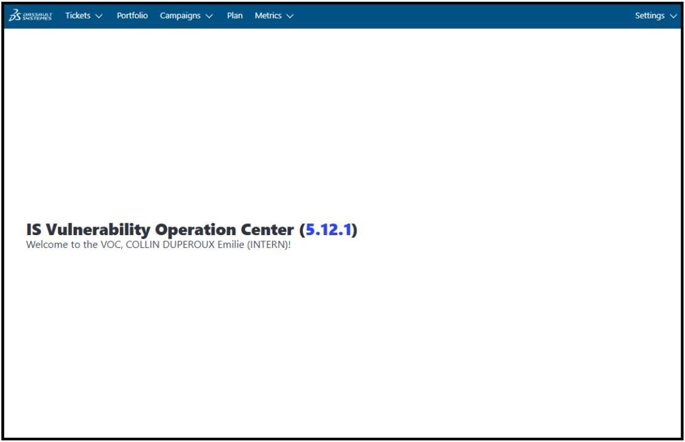
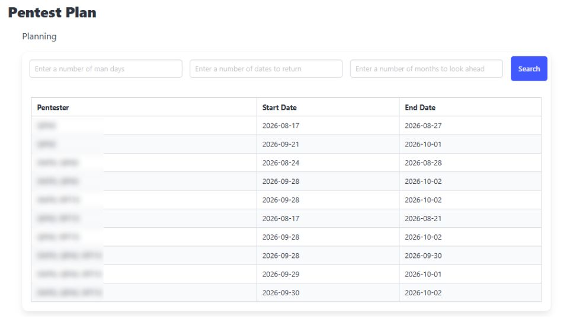
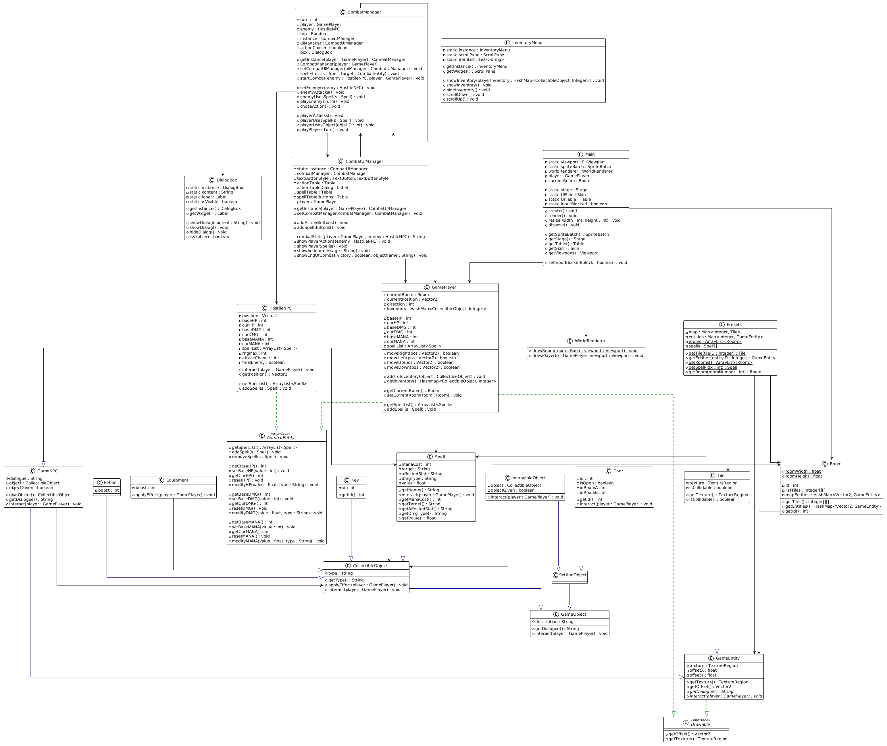
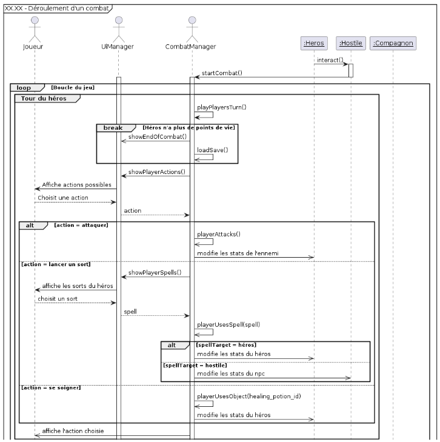
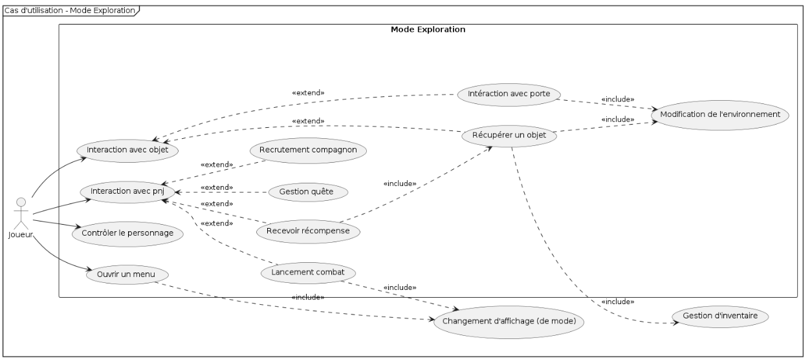
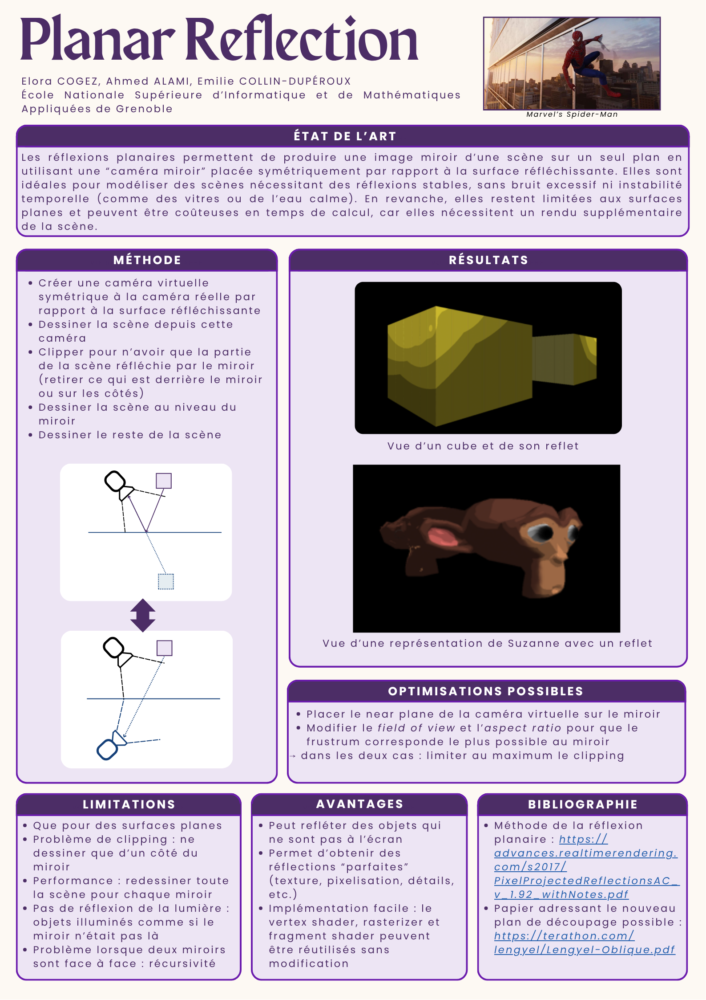
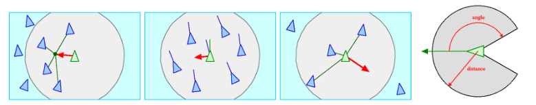

2 Months Internship - Dassault Systemes
In summer 2026, I joined the cybersecurity IS team of Dassault Systèmes for 2 months. I was assigned to the development of a new version of the team's reference website, the Vulnerability Operation Center (VOC). The VOC used to store the retrieved data in a cache, but I was required to change it to a database so that the database would become the sole source of truth. This way, it would also enable future improvements of the VOC.
To get more into details, I carried out the following steps:
- Connection of the database with SQLAlchemy and retrieval of the data stored inside;
- Connection of the database and the VOC: assuming a populated database, the task was to build the cache using the information contained within the database;
- Connection of the database to various external APIs to populate the database;
- Management of database updates, whether it be inserting, modifying, or deleting information;
- Preparation of database backups;
- Deletion of the cache.
Since I finished the subject of my internship earlier than expected, I also developed a new feature for the VOC: a schedule. It was a necessary tool for my team as Dassault Systèmes' cybersecurity teams were currently going through a reorganisation, so my team was bound to grow in size. Here is how it works: the user enters the number of person-days required and a timeframe in which to look for, and the feature returns available pentesters along with the corresponding dates.


Object Analysis and Design
The instructions for this project were very vague: it only required to create a game, with a view in the terminal or with an editor, and to deliver documentation explaining its conceptualisation alongside it. The main purpose of this project was to conceptualize a game from start to finish by using diagrams rather than heading straight into programming.
That's why we first wrote specifications to lay down the gist of the game, then wrote an analysis and a design document to specify our needs.
We could then start the programming phase. We coded in Java, using the library LibGDX to handle game interactions. We also needed to look for free assets for the visual part of our game.
We would do a back and forth between our software class diagram and our program when we realized some details were missing.
Finally, we wrote a user manual and an assessment of our product.



3D Graphic Project
The purpose of this project was to improve the rendering pipeline seen in the practical works in class. We chose to implement planar reflection. They enable a mirror image of a scene to be produced on a single plane. Our methodology was the following:
- Creating a virtual camera symmetrical to the real camera according to the reflecting surface;
- Rendering the scene from this camera;
- Clipping the view to keep only the part of the scene reflected by the mirror (remove elements behind the mirror or to the sides);
- Rendering the scene at the mirror's position;
- Rendering the rest of the scene.

Projet Software Engineering
The objective of this big project was to write a compiler in Java for the Deca language (a small language similar to Java). We needed to adopt a quality approach, with the goal of producing "zero-defect" code, by developing a test suite capable of evaluating the compiler's conformity to the specification provided in the 231 pages documentation. This project could be decomposed in 3 major steps, that we would work on incrementally. Firstly we tried to make a simple test printing "Hello world" function, then we added all the necessary steps to make all non-class programs work, and finally we achieved to realize class-programs operational. Here are the 3 steps:
- Step A - Lexical and syntactic analysis: implementation of a parser for Deca that constructs the program's primitive abstract syntax tree;
- Step B - Contextual checks: on the one hand, verification of the contextual syntax of Deca and, on the other, enrichment of the abstract tree and adding of contextual information to it;
- Step C - Code generation: production of a sequence of abstract machine instructions corresponding to the tree of a contextually correct Deca program.
The compiler is the main program that invokes stages A, B, and C on the source programs. It can be called with different arguments, to limit the running to a certain step, or to limit the number of registers available for step C for example.
In addition to this work, we had to provide a huge battery of tests to cover the largest-scale of cases possible (we made a total of 569 tests), and to implement an extension. The goal of our extension was to generate Java bytecode, starting from .deca files. Java bytecode corresponds to .class files. A .class file represents the compiled form of a .java file. The task for this extension, therefore, was to create these .class files from .deca files (treated as .java files) using bytecode manipulation libraries and the decac command, while considering only the functions and methods defined by the Deca language.
Object-Oriented Programming - Boids
This project, done in Java, aimed to study systems that would simulate the movement of agents in swarms. In my case, I focus on boids. An agent's behavior depends on the position and orientation of surrounding agents - that is, those close enough to it and within its field of view. The basic model is based on the application of three rules:
- Cohesion: an agent moves towards the average position (center of mass) of its neighbors;
- Alignment: an agent tends to move in the same direction as its neighbors;
- Separation: agents that are too close repel each other to avoid collisions.
Our implementation consisted of a class Agents, with basically ArrayLists of the positions and the speeds of each agent, a class Boids that inherited from it and a class BoidsSimulator to manage the drawing of the boids. The class Boids defines all the boids of a group, and how to predict their next position by calculating all the forces applied on it (meaning that at all times, an ArrayList of neighbors is also updated for each boid).

Project C
A project done by groups of 3 for a duration of 3 weeks.
The purpose was to realize a graphical interface by implementing a software library using C language. In order to do so, we were given a documentation of ?? pages explaining the different steps of our programming, as well as some functions, notably a function to create a window, and one returning a pointer to the address of the pixel at coordinates (0, 0) of a surface.
From there, we could write functions to draw a line, multiple lines, a polygon, a curve and text. We needed to be careful at this point and handle the case of clipping, in case we would drag the window out of the frame, or two windows overlapping for example.
Afterwards, we needed to focus on interactions - clicking on a button or closing a window for instance.
Finally, we were able to make complex test games work, like a puzzle.